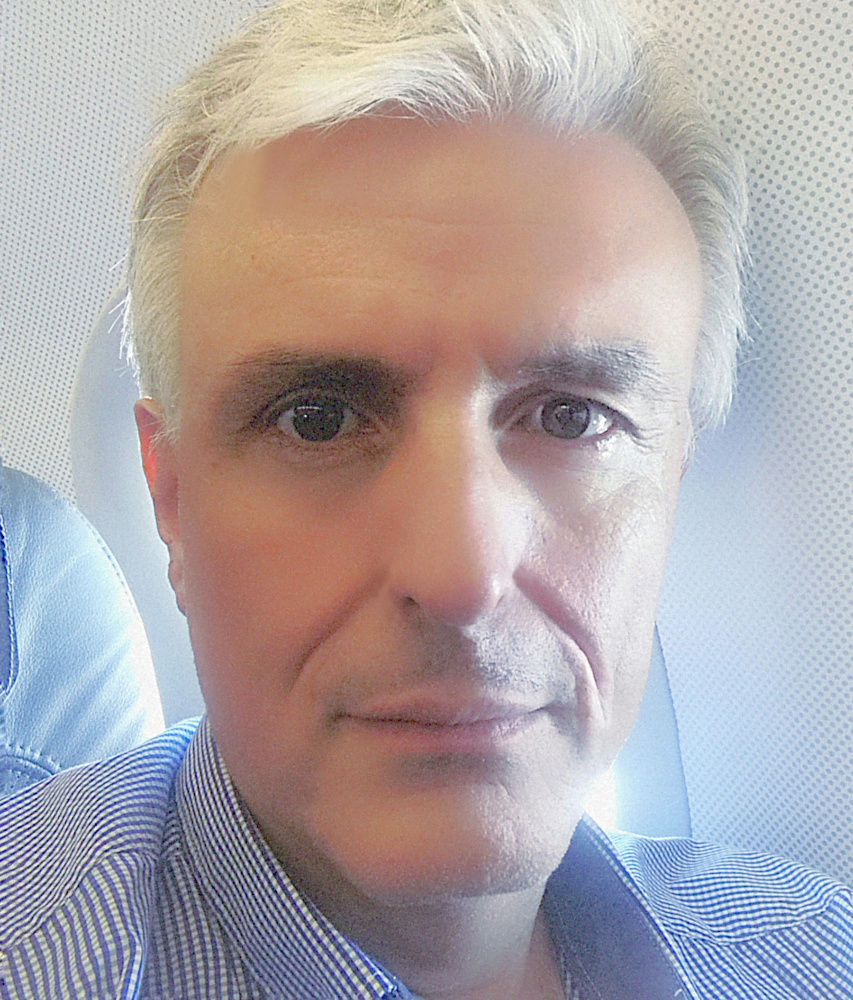

Technology, Music and Quality of Life(Undergraduate)
Research Methods in Psychoacoustics and Cognitive Psychology of Music(Undergraduate)
Introduction to the Acoustics of Musical Instruments(Undergraduate)
Computational Techniques and Musical Acoustics Applications (Undergraduate)
Educational technology and music(Undergraduate)
Performing Arts Medicine (University of Athens, Medical School) [as co-tutor](Undergraduate)
Clinical Skills and Tutoring Series (University of Athens, Medical School, 1st ENT Clinic) [as co-tutor](Undergraduate)
Biophysics (University of Athens, Medical School, Audiology-Neurotology MSc.) [as co-tutor](Postgraduate)
Basic Science in Audiology and Neurotology (University of Athens, Medical School, Audiology-Neurotology MSc.) [as co-tutor](Postgraduate)
Natural and Artificial Perception (AUTH, ECE, MSc on Advanced Computer & Communication Systems) [as co-tutor](Postgraduate)
Natural Language & Voice Processing (AUTH, ECE, MSc on Advanced Computer & Communication Systems) [as co-tutor](Postgraduate)
2026
2025
2024
2023
2022
2021
2020
2019
2018
2017
2016
2015
2014
REGAIN-REgeneration of inner ear hair cells with GAmma-secretase Inhibitors, European Union’s Horizon 2020, Researcher, Author
2018-2020
EVOTION: BIG DATA SUPPORTING PUBLIC HEARING HEALTH POLICIES, European Union’s Horizon 2020, Researcher, Author